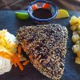

Cocinando
El rey de la cocina
Gastronomia

Historial
- Mi plato preferido
- mis recetas
- Inicio
- Favoritos
HeladosArtesanales
Octubre 22 de 2018
los mejores helados artesanales del mundo sin colorantes ni saborizantes. Además somos 100% naturales ya que usamos sólo frutas e insumos de primera calidad y con una preparación totalmente artesanal. También tenemos más de 50 sabores que fueron elaborados con meses de prueba y error hasta lograr un sabor auténtico y natural. Por ejemplo: el helado de Piña es hecho de piña madura y no “sabor a piña” como lo hacen gran parte de nuestros competidores y sin excesos de azúcar, ya que buscamos el dulzor natural de la fruta madura.